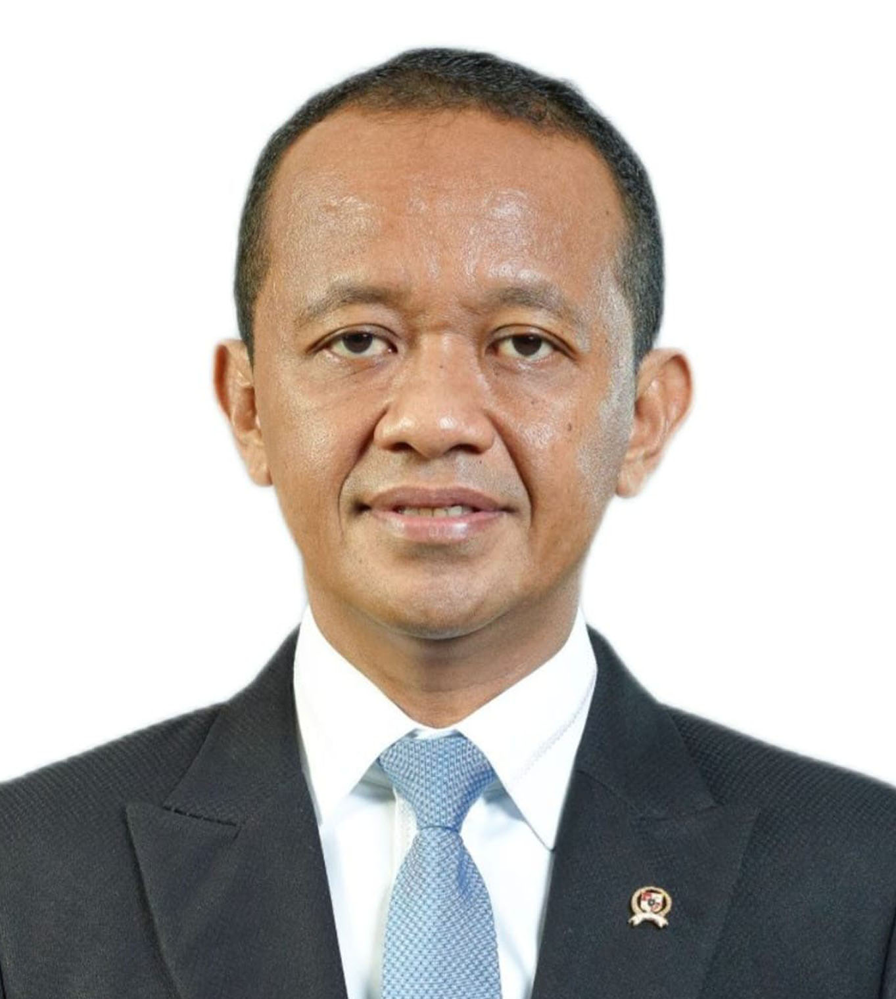

BAHLIL LAHADALIA
Tokoh nasional yang merintis karir dari bawah. Memiliki komitmen kuat dalam memajukan iklim investasi, mendorong hilirisasi mineral, dan memastikan pertumbuhan ekonomi Indonesia yang merata dari ujung timur hingga barat.

REKAM JEJAK
Menteri Energi dan Sumber Daya Mineral
2024 - Sekarang
Fokus pada transisi energi, tata kelola tambang, dan memastikan ketersediaan energi nasional.
Menteri Investasi / Kepala BKPM
2021 - 2024
Berhasil melampaui target investasi nasional dan membawa masuk industri baterai kendaraan listrik (EV) ke Indonesia.
Ketua Umum BPP HIPMI
2015 - 2019
Memimpin Himpunan Pengusaha Muda Indonesia, mendorong UMKM naik kelas, dan memperkuat relasi pengusaha daerah.
PENDIDIKAN
Doktor (S3) Kajian Stratejik & Global
Universitas Indonesia (UI)
Meraih gelar doktor dengan predikat *cum laude*, meneliti kebijakan strategis hilirisasi nikel.
Sarjana (S1) Ilmu Ekonomi
STIE Port Numbay, Jayapura
Masa kuliah yang dilalui penuh perjuangan sambil aktif berorganisasi dan merintis jalan sebagai pengusaha.
SMA YAPIS Fakfak
Papua Barat
Masa remaja di tanah Papua, di mana ia mulai terbiasa hidup mandiri dan bekerja keras.
SMP Negeri 1 Fakfak
Papua Barat
Fondasi awal masa sekolah menengah di kampung halaman tercinta.